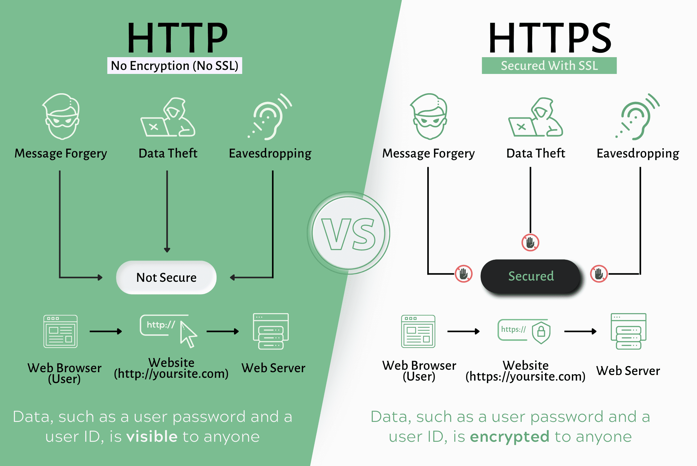

Definisi HTTP dan HTTPS
HTTP (Hypertext Transfer Protocol) adalah "bahasa" atau protokol yang digunakan oleh browser (klien) untuk berkomunikasi dengan server web. Bayangkan ini sebagai seperangkat aturan tentang bagaimana pesan permintaan (request) dan jawaban (response) harus diformat agar saling dimengerti.
HTTPS (Hypertext Transfer Protocol Secure) adalah versi aman dari HTTP. Ini adalah HTTP yang sama, tetapi dengan lapisan keamanan tambahan yang disebut SSL/TLS (Secure Sockets Layer/Transport Layer Security).
Bagaimana Cara Kerjanya?
Saat kamu mengunjungi sebuah situs, proses dasarnya adalah:
-
Permintaan (Request): Browser kamu (klien) mengirimkan "Permintaan HTTP" ke server. Permintaan ini bisa berupa
GET(untuk meminta data/halaman) atauPOST(untuk mengirim data, seperti mengisi formulir). -
Respon (Response): Server menerima permintaan, memprosesnya, lalu mengirimkan kembali "Respon HTTP". Respon ini berisi halaman web (file HTML, CSS, JavaScript) yang kamu minta, beserta kode status (seperti
200 OKjika berhasil, atau404 Not Foundjika halaman tidak ada).
Perbedaan Utama dengan HTTPS
Perbedaan utamanya adalah enkripsi.
- Pada HTTP, data dikirim sebagai teks biasa (plain text). Jika seseorang "mengintip" koneksi kamu (misalnya di Wi-Fi publik), mereka bisa membaca semua data yang kamu kirim dan terima.
- Pada HTTPS, semua data antara browser kamu dan server dienkripsi. Ini berarti data diacak sedemikian rupa sehingga tidak ada yang bisa membacanya kecuali browser kamu dan server tujuan. Inilah mengapa kamu melihat ikon gembok di browser saat mengunjungi situs perbankan atau e-commerce.